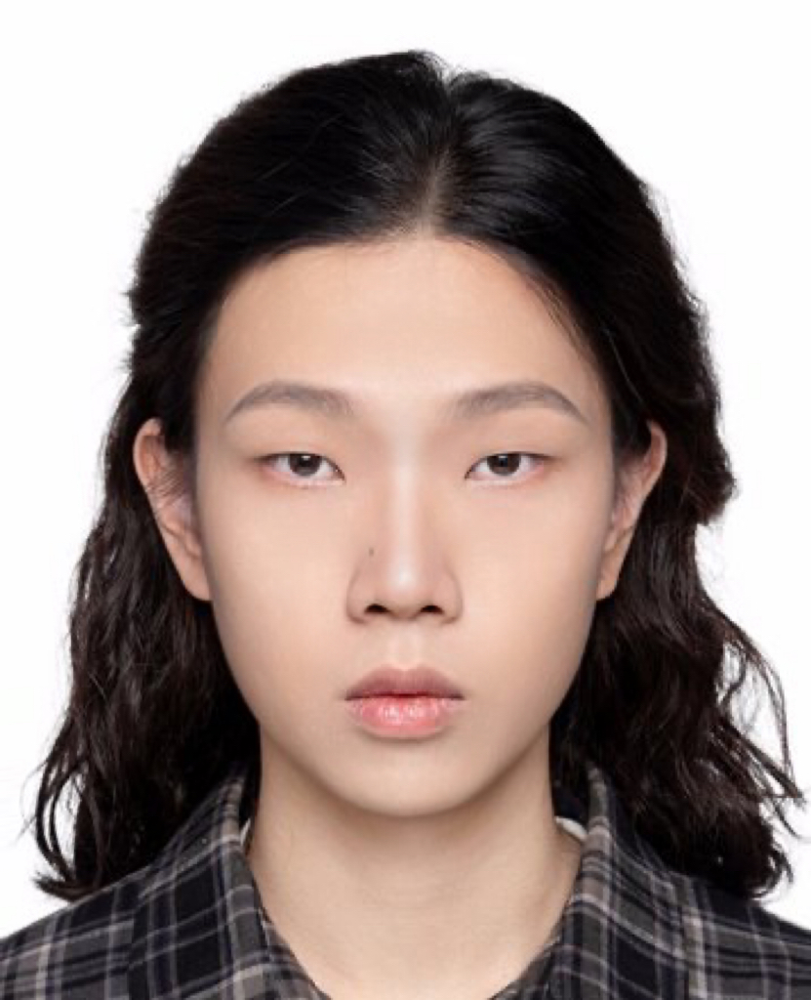
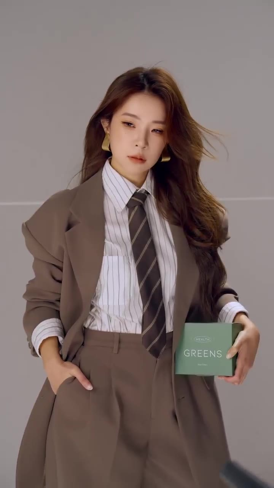

RYAN YANG / 杨荣炜MEDIA PORTFOLIO
BRAND CONTENTIMAGE & MOTION
Ryan Yang.
把想法写进脚本，把故事带进画面。
策划 · 影像 · 设计CONCEPT INTO FRAME
浏览精选作品 ↘EXPLORE THE WORKRY / PORTFOLIO内容策划 ↗影像叙事 ↗视觉表达 ↗
ABOUT / 创作者01

品牌内容策划 / 影像制作
把想法写进脚本，
把故事带进画面。
我是杨荣炜 Ryan YANG，专注品牌内容策划与影像创作。
曾在南方周末实习，参与品牌项目的创意提案、拍摄策划与视频脚本，也独立完成商业影像、摄影及动态设计作品。我关注如何把品牌需求转化为清晰、有感染力的内容。
CONTENT · IMAGE · MOTION

01 / COMMERCIAL FILM
人物与产品，进入同一个故事。
人物与产品，进入同一个故事。
01 / CONCEPT先找到
先找到
表达的切口。
从品牌需求与传播主题出发，形成内容概念、营销创意和视频脚本。
02 / PRODUCTION再把想法
再把想法
落实到画面。
在商业拍摄中完成策划、实拍与后期，在合作项目中承担明确的创作环节。
03 / EXPLORATION让不同媒介
让不同媒介
扩展表达。
通过摄影、C4D、AE与平面设计，探索故事和信息的不同呈现方式。
SELECTED WORK / 项目索引
作品展开↘
真实项目与独立习作。
每个案例，都说明我的具体贡献。
BEHIND THE WORK
杨荣炜Ryan YANG
品牌策划 / 新媒体内容方向关注内容如何被理解，
也关心它最终如何被看见。
传播与策划专业背景。在南方周末实习期间参与品牌内容与公益项目的前期策划、视频脚本；在校兼职期间承接商业影像与活动摄影，在校园融媒体中心参与活动记录。
南方周末实习
品牌内容策划、营销创意提案、视频与宣传图拍摄策划、视频脚本。
呼吸酿造
新媒体运营实习
新媒体运营实习
参与小红书内容策划与笔记产出、私域社群维护及线下活动传播，将内容创作与日常运营结合。
商业影像与摄影
人物、产品、会议活动的拍摄策划、现场摄影及后期制作。
深圳职业技术大学
传播与策划 · 2023—2026
课程创作涵盖品牌方案、影像、平面与动态设计。
CONTENT OPERATIONSCOMMUNITYPLANNINGPHOTOGRAPHYEDITINGC4DAFTER EFFECTS
也聊聊可能↗